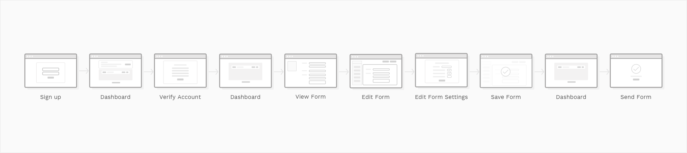
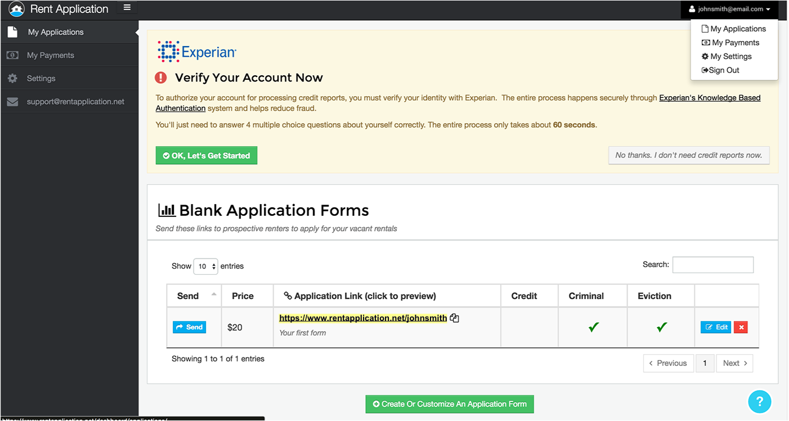
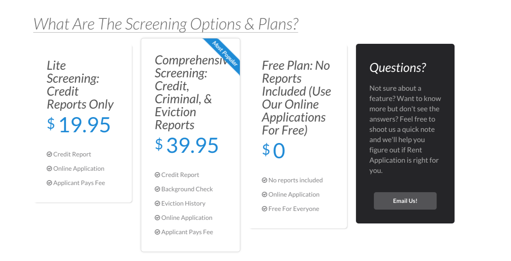
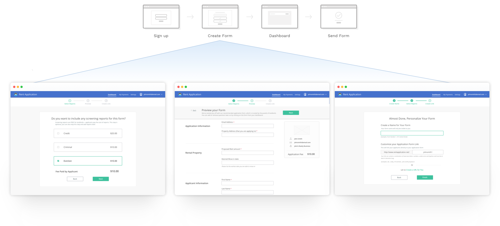
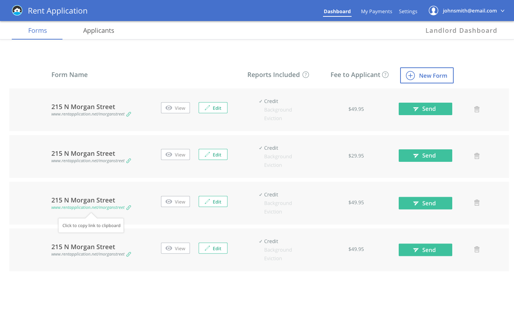

The Brief
Rent Application was experiencing high a drop off rate from new users. I was brought on to help identify causes of the issue and design solutions to address the problems.
As lead designer on this project, I was involved in all phases of the project from research and design to production. My tasks included conducting user research, wireframing, designing the high fidelity screens as well as crafting marketing material. I worked directly with the development team to produce an improved onboarding experience for new users.
My Design Process
Understanding the Problem
To understand our user’s behavior pattern and the cause of the issue, I began the project by conducting some discovery and usability research.
Heuristic evaluation
I started off this project with an heuristic evaluation to familiarize myself with the product, assess the usability, and identify usability issues of the product in its current form.
Stakeholder Interviews
I worked with the CEO to understand the business objectives and constraints to determine the scope of the project, as well as ensure that I’m aligned with the CEO’s vision for Rent Application.
Discovery Research
I conducted user interviews, observed users through task recording software, and frequently engaged with our head of customer service to get direct input from users. This helped me to identify pain points as well as identify opportunities for improvement in the product.
Defining the Problem
From my research, I was able to identify the key problems that attributed to the user drop off rate. Here were the some of the key problems:
Problem #1
Directly after signup, users were often confused by the complex dashboard without guidance, cluttered navigation, and unclear labeling. Many users were immediately put off by the experience.
old flow
Problem #2
Immediately when users signed up, they are shown a banner that links to a page asking for the their SSN, birthdate, and answers to personal identifying questions.
A flashing banner requires users to put in their social security number and sensitive personal information, but didn’t effectively explain the context.
Problem #3
There were also number of issues when it came to pricing: New users were put off by immediately seeing a price on the dashboard, most users didn’t understand that the basic application form was free and that additional costs are paid for by applicants.
Problem #4
There were also number of issues when it came to pricing: New users were put off by immediately seeing a price on the dashboard, most users didn’t understand that the basic application form was free and that additional costs are paid for by applicants.
our users
From my research, I created two main user types that capture our primary users’ behavioral pattern for me to keep in mind as I design solutions.
Design Solutions
To address these key issues among many others, we decided the platform needed a comprehensive redesign. I created wireframes and prototypes to quickly gather user feedback and iterate on the solutions.
Designing a new onboarding experience
In the aim to reduce the complexity, I redesigned form creation experience by simplifying the experience into a linear guided three step process.
New Flow
Ditching the complex pricing model
In order to communicate pricing to users, I guided users through a flow where users create their first form, which allowed users to select the reports they wanted with the associated costs displayed, and show the price total at the bottom change depending on which reports users selected.
I also changed the label wording from generic “Price” to “Fee paid by applicant” to inform the user that applicants will pay the fees.
Trust through Transparency and Context
Experian verification is only required if users want to run credit reports. The purpose was unclear to users and did not seem optional. Users often questioned, “Why do they need my SSN?”.
I embedded this verification as an option into the form creation process and created a link to the experian flow only if users wanted to add credit reports. By presenting this option only when it applies to the user’s task, users were able to understand the context of Experian verification.
Redesigning the Dashboard
Along with making some major changes to the initial user flow, I worked on improving the dashboard structure by highlighting the key actions based on research from users. By establishing more visual hierarchy, adding iconography and tooltips, and using more clearly defined categories, I was able to remove unnecessary clutter for the users.
Before
After
Making a mobile experience
In the rental industry, renting decisions often need to be made within the day of the results. Having an optimized mobile experience is imperative for our users to take actions directly from an email notification on the phone to view and review a new applicant on the platform.
Improving usability across the product
In addition to reworking the onboarding experience, I’ve also worked on various other features for Rent Applications to ensure a unified experience across the platform.
Validation and Results
Usability Testing
We implemented customer monitoring software to observe users’ interaction with the redesigned product which helped us further iterate and improve on the design.
I also created a survey to gather both qualitative and quantitative feedback on the redesign. The results showed signs of improvement to the product with the redesign efforts. The redesign also helped us reduce the bounce rate by 42.7% with the release.